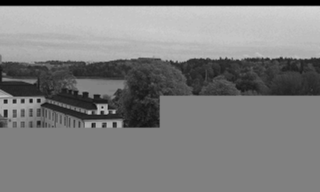
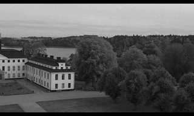

CLAYERS=8
CLEVELS=2
CPRECINCTS="{128,128},{64,64},{32,32}"
CBLK="{32,32}" B=128 # block size
A=0 # subpixel accuracy = sub-pixel accuracy of the motion estimation
D=0 # border size = size of the border of the blocks in the motion estimation process
S=4 # search range = size of the searching area of the motion estimation
V=2 # overlapping| bytes | cr+me | trunc |
| 1K | ||
| 11K |  | |
| 21K | ||
| 31K | ||
| 41K |  | |
| 51K |
A partir de 51K ya se ha transmitido la primera capa de calidad completa de todos los precintos, por eso a partir de este punto ya no seguimos evaluando porque ya no estaríamos reutilizando los datos que tenemos de la imagen anterior.
A partir de 21K ya empezamos a tener valores muy similares de SSIM.